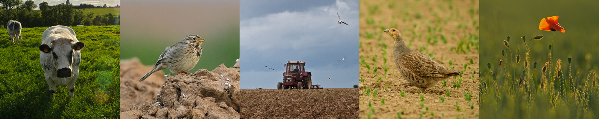

« Agriculture et Biodiversité »
"La condition naturelle à l'homme est de cultiver la terre et de vivre ses fruits."
#Jean-Jacques Rousseau#
Avec son territoire à dominance agricole, La Tunisie a choisi de travailler sur des projets agricoles (biodiversité, environnement et agriculture durable …). La gestion globale des projets (suivi, démarches, évaluation …) ainsi que la réalisation des travaux d’aménagements, études et d’assistance technique.
Agro-Tunisie accompagne les collectivités dans leurs projets de développement de l’agriculture biologique en cohérence avec les besoins du terrain. Nous partageons notre connaissance et notre expertise, nous proposons aux collectivités des outils concrets et des exemples d’expériences réussies. Agro-Tunisie met toutes ses compétences et celles de ses partenaires au service des collectivités, de la conception à la mise en œuvre des projets de territoire.
Le projet agriculture durable est mené dans le but de réduire la dégradation des ressources naturelles et augmenter la valeur de la production des secteurs productifs.
Le site www.agro-Tunisie.com propose en libre accès des publications, des bonnes pratiques ainsi que des supports pédagogiques pour la promotion d’une agriculture durable en Tunisie.
Ce site internet s’adresse avant tout aux formateurs, conseillers et coaches agricoles, responsable environnement et foresterie. Les agriculteurs, jeunes promoteurs et autres acteurs en milieu rural intéressés par le développement agricole durable sont aussi invités à utiliser et développer le site « www.agro-Tunisie.com ».
L’agriculture durable constitue en effet un nouveau défi pour le monde agronomique. Il s'agit d'assurer ensemble une production qui engendre des bénéfices écologiques, économiques et sociaux.
Notre comité de rédaction répond volontiers à vos questions soumises par mail (agridurable@gov.tn).
L'équipe Agro-Tunisie
Entreprise :
Site web: www.Agro-Tunisie.com
Email : agro-tunisie@gov.tn
Secteurs : Agriculture
Taille de l’entreprise : 1-10 employés (sondée en : 2020)
Domaines : foresterie, eau et irrigation, agriculture et renforcement de capacités.